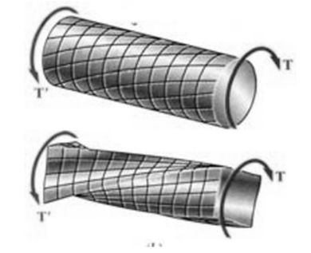
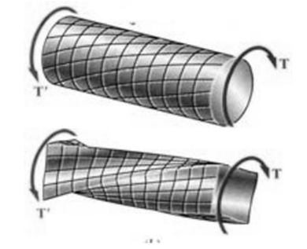

Theory
A circular bar when subjected to torque will be twisted. Shearing stresses are developed in any cross section of the bar whose value increases linearly from zero at the centre to a maximum at the outer periphery and troptometer is used to measure twist to an accuracy of one minute.
 

- Axial-Torsion: Applying both axial (tension or compression) and torsional forces to the test specimen.
- Torsion Only: Applying only torsional loads to the test specimen
- Failure Testing: Twisting the product, component, or specimen until failure. Failure can be classified as either a physical break or a kink/defect in the specimen.
- Proof Testing: Applying a torsional load and holding this torque load for a fixed amount of time.


 then
then  The assumptions made while deriving the above relation are
The assumptions made while deriving the above relation are
- Material is homogenous.
- Circular section remains circular and do not warp.
- A plane section of a material perpendicular to its longitudinal axis remains plane and does not warp after the torque is applied.
- Shaft is loaded by a couple or torque in a plane perpendicular to the longitudinal axis of the plane.
- Shear stress is proportional to shear strain; it means that Hook’s Law is applicable.
- In circular shafts subjected to torque shearing strain varies linearly.

Procedure
OBJECTIVE: To determine experimentally, the ultimate shear strength in double shear of mild steel plate. STEPS:
- Double click on the direct shear test on mild steel plate file , a window will open as shown below.

- Click on the NEXT button to move to the next step.

- Here the width and thickness of the mild steel plate is determined, then click on NEXT button to see the placing of the test set up.

- After placing the specimen in UTM move to next step by clicking on the NEXT button.

- Switch on the machine and apply load gradually.

- Load is applied till failure of the specimen, then click on NEXT button to check the results.

- The final results can be viewed from the tabular column as shown below.


Self Evaluation

Simulator

Assignment
- What do you mean by modulus of rigidity?
- Define modulus of rupture?
- How the angle of twist is measured in this test?
- Why does the brittle material fails in helicoidal shape and ductile material shears on right section under torsion load?
- What are the different failure modes of the specimens?

Reference
- IS 1717 (2012): Metallic Materials - Wire - Simple Torsion Test, Third Revision, 2012.
- Hearn E,J., Mechanics of Material, Pergaman Press, England,1972.
- Beer and Johnston E.R., Mechanics of Material, 3rd Edition, Tata McGraw Hill,New-Delhi,2007.
- Jindal U. C., Strength of Materials, 2012.
- G.E. Dieter, Mechanical Metallurgy, SI Metric Edition, McGraw – Hill.
- Gambhir, Building and Construction Materials, 2014.
- F.L. Singer. Engineering Mechanics – Statics and Dynamics, Harper and Row Publishers.
- J.L. Marium and L.G. Kraige, Engineering Mechanics – Vol I & II, John Wiley & Sons.

Video

Quiz